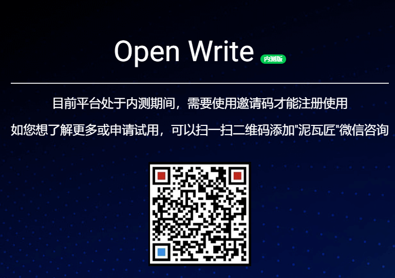

许多网友想看一文多发的OpenWrite，今天，它来了！别问落地价，因为内测无价！
这款实用工具，可支持十大博客平台一键发布，是博主们的发文神器
你看它多种平台、一键管理、后台界面优雅、还有签到计划
怎么样，还不来体验一下(
编不下去了😂)
我也是去年刚刚开始写博客的小菜鸡，虽然不会有人来爬我写的小白文(有我也不知道哇😂)
但是出于技术博主的惯例，大家都希望自己的文章可以被更多人看到，于是写完一篇博客之后会有以下操作：
思否发布->简书发布->CSDN发布->博客园发布->掘金发布->.............
呕心沥血创作一篇文章已经掉了很多头发了，没想到还要再重复发布操作N次，每次写完文章要发布时都头皮发麻
但是、But.....救星来了，OpenWrite，一款让你专注文章创作，而不用为文章发布而烦恼的平台工具。
据群内大佬们讨论，后期可能会加入其他渠道（个人博客等）
目前已经支持微信公众号一键复制功能，大大节省了公众号文章的维护和处理。
OpenWrite除了核心功能一文多发外，还有两个特色功能。
签到计划是我们为每位博主提供的粘性工具，读者通过二维码扫描参与签到计划，而二维码可以由博主放置在任意平台的博文下，参考示例如自律到极致-人生才精致：第12期 点击链接查看
如果说签到计划是博主与读者的互动，那么赞助平台就是博主与赞助商的互动。
举个栗子：
我是一个写博客的,我有很多读者很多阅读量。
XXX是一个出版社的,需要为某本或者某批书做宣传。
这里两个角色就达成了供求关系，博主就是流量主，出版社的就是赞助商。
详细使用介绍可以参考OpenWrite 赞助平台全流程说明
目前OpenWrite还属于内测期间，功能也都在完善中，如果你也有一文多发的烦恼不妨来体验下
我已经用了两个星期了，贼好用😁😁😁
Open Write官网：https://www.openwrite.cn
Open Write内测入口：

最后还是要感谢各位OpenWrite的开发大佬 程序猿DD、泥瓦匠，等等其他大佬们。